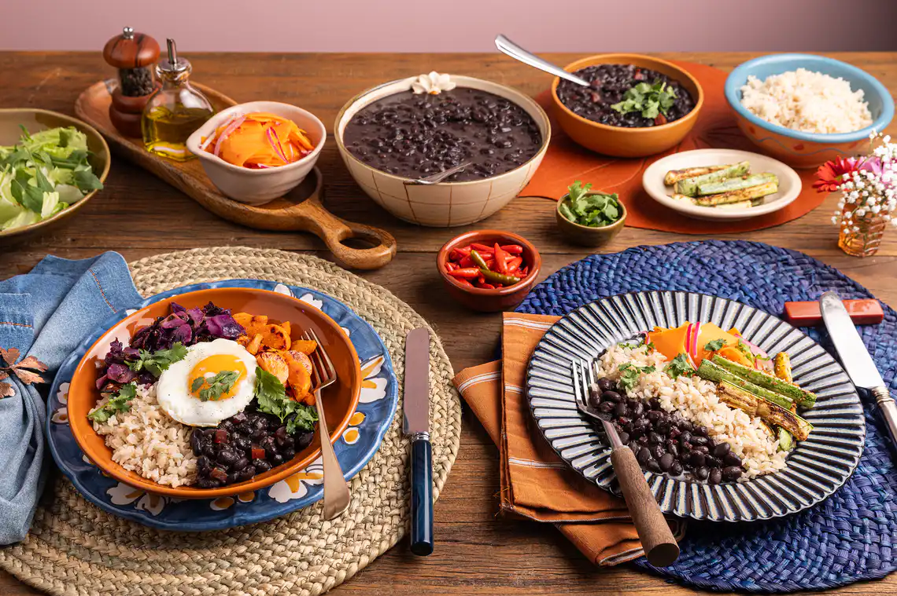

Joao Francisco
Receitas do dia-a-dia
A correria do dia a dia não precisa ser um obstáculo para comer bem. Em nosso blog, vamos
compartilhar receitas rápidas e fáceis que se encaixam perfeitamente na sua rotina. Com ingredientes
acessíveis e métodos descomplicados, você vai aprender a preparar refeições deliciosas em minutos.

Renata
Viagem Culinária
Você está pronto para embarcar em uma aventura culinária ao redor do mundo? Em nosso blog, vamos
explorar receitas autênticas de diferentes culturas e regiões. Desde o tempero exótico da Índia até
os sabores frescos do Mediterrâneo, cada postagem será uma nova descoberta.
João Francisco
Cozinha Organizada
Manter a cozinha organizada não só facilita o processo de cozinhar, mas também economiza tempo e
reduz o estresse. Neste espaço, vamos compartilhar dicas valiosas para organizar seus utensílios,
otimizar o espaço e criar um ambiente harmonioso.
Renata
Doces e Sobremesas
Vamos mergulhar no mundo das sobremesas e explorar receitas que vão desde os clássicos até as
inovações mais criativas. Seja você um fã de bolos, tortas, ou sobremesas geladas, aqui você vai
encontrar inspiração para criar delícias que encantam a todos.
Renata
Gastronomia Saudável
Alimentar-se bem é essencial para uma vida saudável e equilibrada. Com receitas nutritivas e dicas
de alimentação consciente, você vai aprender a preparar pratos que são bons para o corpo e para a
alma.
João Francisco
Sabores Caseiros
Aqui, vamos explorar receitas que trazem a magia dos sabores caseiros para a sua cozinha. Se você
é um cozinheiro de primeira viagem ou um chef experiente, nossas dicas e truques vão inspirar você a
criar pratos deliciosos e memoráveis.